Simulating Dual-Pixel Images From Ray Tracing For Depth Estimation
Fengchen He,
Dayang Zhao, Hao Xu, Tingwei Quan, Shaoqun Zeng
HUST, China
Accepted by ✨ ICCV 2025 ✨
See you in Hawaii 🌺
TL; DR:
Simulated DP images can address the scarcity of DP-depth paired data but face a domain gap between simulated and real DP data.
In this work, we propose Sdirt based on ray tracing to to bridge this domain gap!
In this work, we propose Sdirt based on ray tracing to to bridge this domain gap!
Abstract
Many studies utilize dual-pixel (DP) sensor phase information for various applications, such as depth estimation and deblurring.
However, since DP image features are entirely determined by the camera hardware,
DP-depth paired datasets are very scarce, especially when performing depth estimation on customized cameras.
To overcome this, studies simulate DP images using ideal optical models.
However, these simulations often violate real optical propagation laws,
leading to poor generalization to real DP data.
To address this, we investigate the domain gap between simulated and real DP data,
and propose solutions using the Simulating DP Images from Ray Tracing (Sdirt) scheme.
Sdirt generates realistic DP images via ray tracing and integrates them into the depth estimation training pipeline.
Experimental results show that models trained with Sdirt-simulated images
generalize better to real DP data.
What is the DP Image?
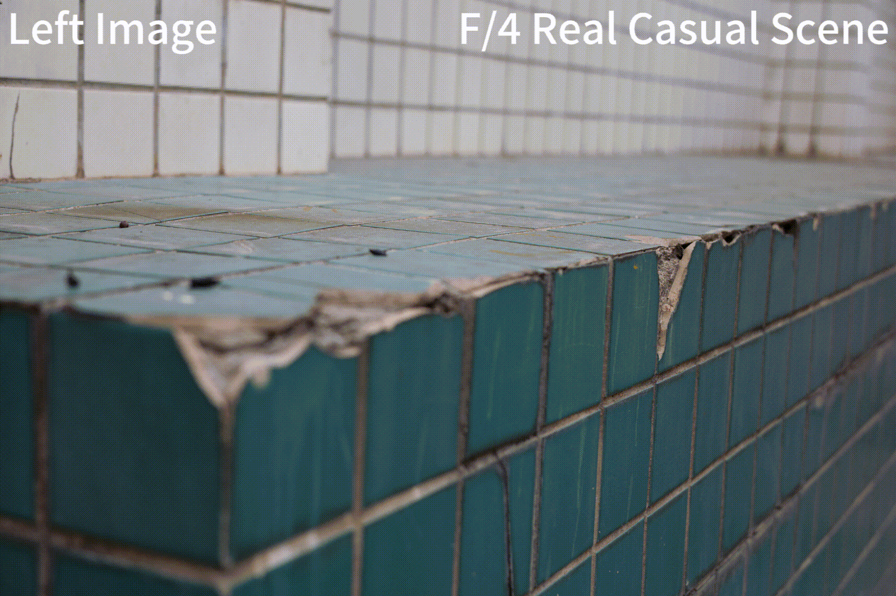
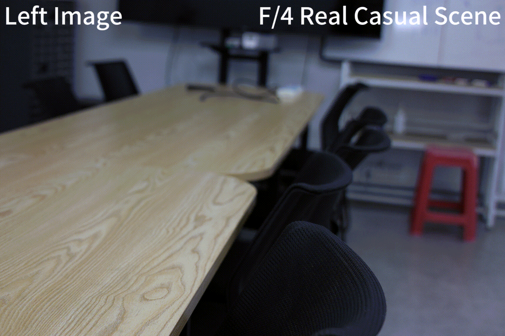
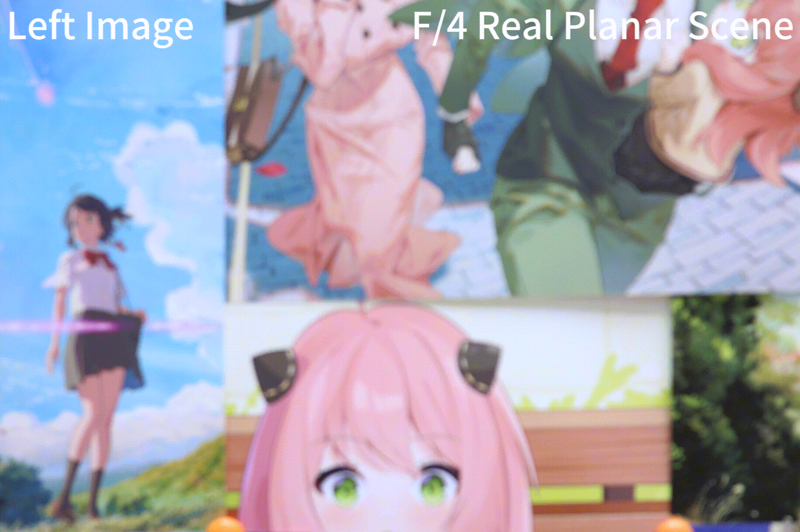
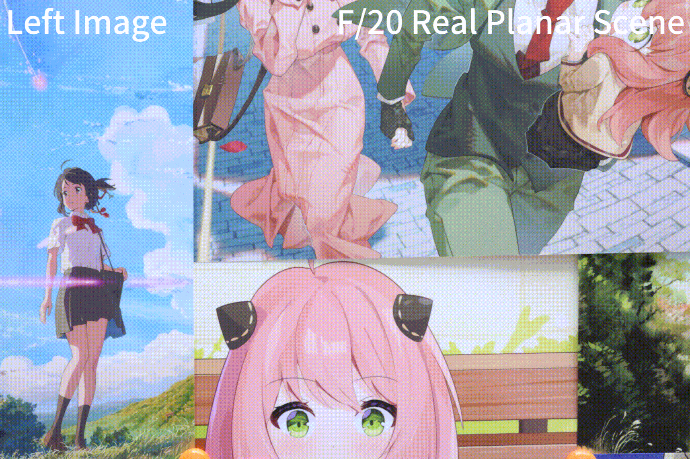
Key characteristics of DP images:
• Each DP pixel is vertically split into two sub-pixels, producing a pair of left and right views from a single frame.
• A slight disparity exists between the left and right views in defocused regions, with opposite directions for front- and back-focused objects.
• Due to lens aberrations and sensor phase splitting, the left-right views often exhibit asymmetric patterns.
• The disparity is aperture-dependent: it is noticeable at wide apertures (e.g., F/4) but negligible at narrow apertures (e.g., F/20).
(Best viewed in color and enlarge on screen.)
• Each DP pixel is vertically split into two sub-pixels, producing a pair of left and right views from a single frame.
• A slight disparity exists between the left and right views in defocused regions, with opposite directions for front- and back-focused objects.
• Due to lens aberrations and sensor phase splitting, the left-right views often exhibit asymmetric patterns.
• The disparity is aperture-dependent: it is noticeable at wide apertures (e.g., F/4) but negligible at narrow apertures (e.g., F/20).
(Best viewed in color and enlarge on screen.)
Motivation
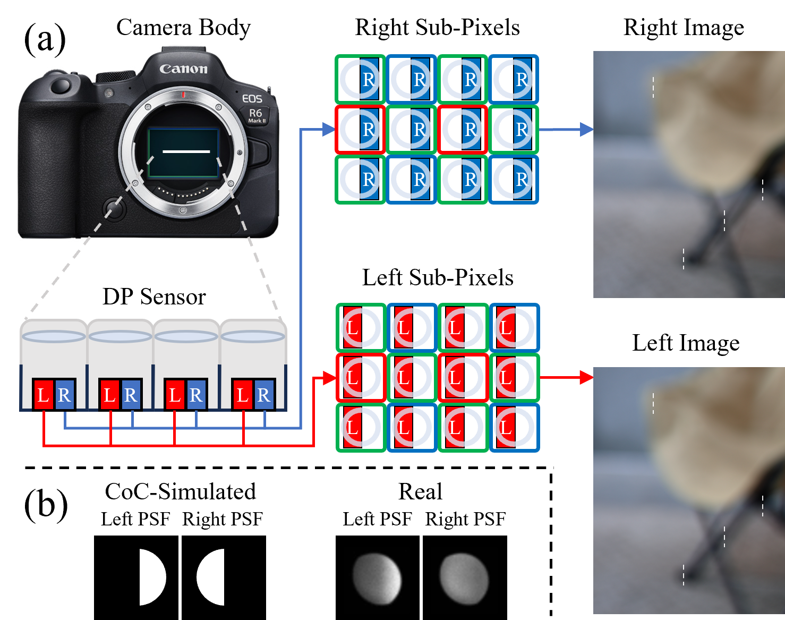
(a) Imaging process of a DP camera. The slight shifts between the left and right DP images caused by phase differences are illustrated with white dashed lines.
(b) Example comparison between real and CoC-simulated DP PSFs, showing a significant difference between them.
Simulated DP PSFs and images generated by existing models exhibit significant discrepancies from real captured modalities, mainly due to their neglect of lens aberrations and the phase-splitting characteristics of the sensor.
(b) Example comparison between real and CoC-simulated DP PSFs, showing a significant difference between them.
Simulated DP PSFs and images generated by existing models exhibit significant discrepancies from real captured modalities, mainly due to their neglect of lens aberrations and the phase-splitting characteristics of the sensor.
Contributions
Our contributions are fourfold:
• We propose a ray-traced DP PSF simulator that computes spatially varying DP PSFs, addressing the domain gap between simulated and real DP PSFs caused by lens aberrations and sensor phase splitting.
• We propose a pixel-wise DP image rendering module that uses an MLP to predict the DP PSF for each pixel, narrowing the gap between simulated and real DP images.
• Depth estimation results show that the DfDP model trained on Sdirt generalizes better to real DP images.
• We collected DP119, a real DP-depth paired test set with an open lens structure and fixed focus, featuring diverse real-world scenes.
• We propose a ray-traced DP PSF simulator that computes spatially varying DP PSFs, addressing the domain gap between simulated and real DP PSFs caused by lens aberrations and sensor phase splitting.
• We propose a pixel-wise DP image rendering module that uses an MLP to predict the DP PSF for each pixel, narrowing the gap between simulated and real DP images.
• Depth estimation results show that the DfDP model trained on Sdirt generalizes better to real DP images.
• We collected DP119, a real DP-depth paired test set with an open lens structure and fixed focus, featuring diverse real-world scenes.
Method
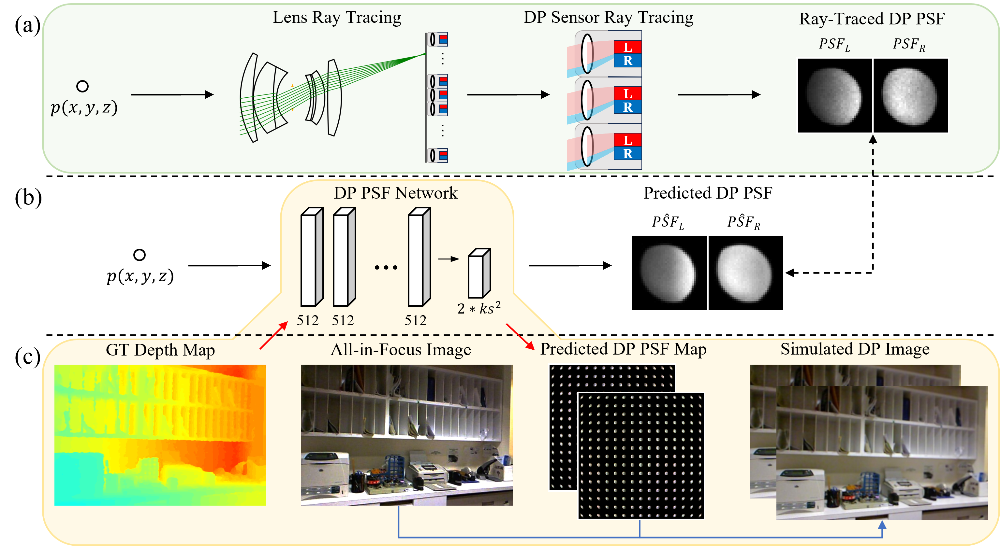
Simulating Dual-Pixel Images from Ray Tracing pipeline.
(a) Ray-traced DP PSF simulator. Calculates spatially varying DP PSFs for lens and DP sensor through ray tracing.
(b) DP PSF prediction network. Trains an MLP network to predict DP PSFs, using the ray-traced DP PSFs as GT.
(c) Pixel-wise DP image rendering module. The network predicts the DP PSFs for all points in the depth map (red pass).
Then, each DP PSF is convolved with the AiF RGB image to render the simulated DP image (blue pass).
(a) Ray-traced DP PSF simulator. Calculates spatially varying DP PSFs for lens and DP sensor through ray tracing.
(b) DP PSF prediction network. Trains an MLP network to predict DP PSFs, using the ray-traced DP PSFs as GT.
(c) Pixel-wise DP image rendering module. The network predicts the DP PSFs for all points in the depth map (red pass).
Then, each DP PSF is convolved with the AiF RGB image to render the simulated DP image (blue pass).
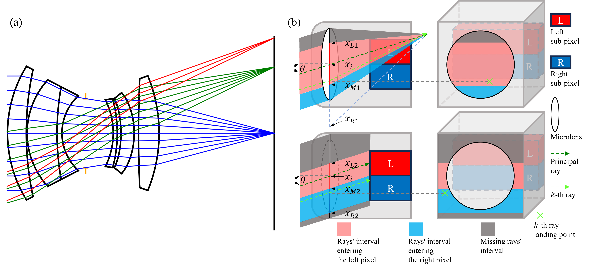
Overview of ray tracing on the lens and DP sensor.
(a) Ray tracing on the lens. (b) Ray tracing on the DP sensor.
(a) Ray tracing on the lens. (b) Ray tracing on the DP sensor.
Qualitative results of simulated DP PSFs.
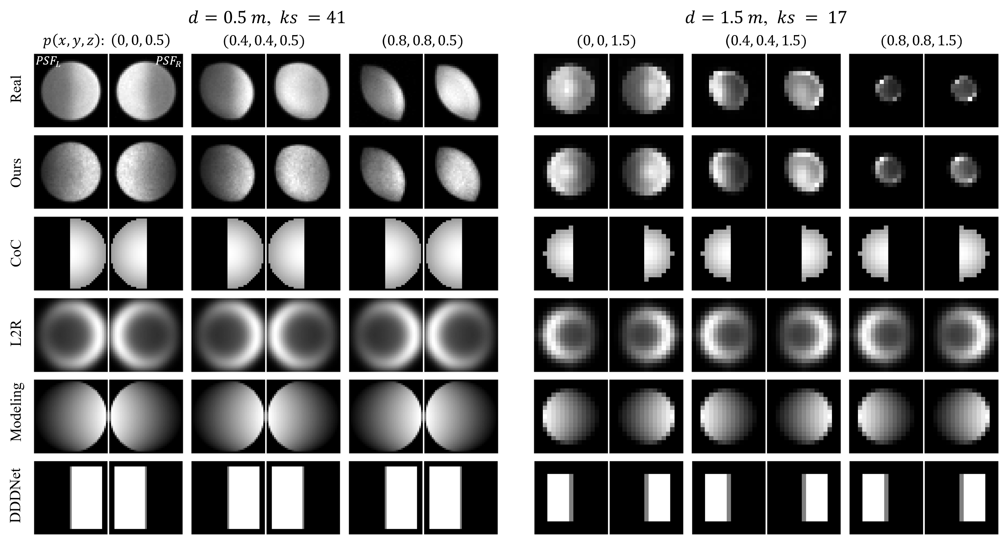
We evaluate real and simulated DP PSFs (ours, CoC, L2R [Abuolaim et al. 2021], Modeling [Punnappurath et al. 2020], and DDDNet [Pan et al. 2021]) under an F/1.8 aperture at two depths (0.5 m and 1.5 m) and three different lateral positions.
As the object point p moves further from the optical axis, the real PSFL and PSFR become increasingly phase-asymmetric, and aberrations are more pronounced.
Existing simulators neglect both aberrations and dual-pixel phase splitting, leading to a large gap between simulated and real DP PSFs. Only our ray-traced simulator produces realistic results across all tested depths and positions.
As the object point p moves further from the optical axis, the real PSFL and PSFR become increasingly phase-asymmetric, and aberrations are more pronounced.
Existing simulators neglect both aberrations and dual-pixel phase splitting, leading to a large gap between simulated and real DP PSFs. Only our ray-traced simulator produces realistic results across all tested depths and positions.
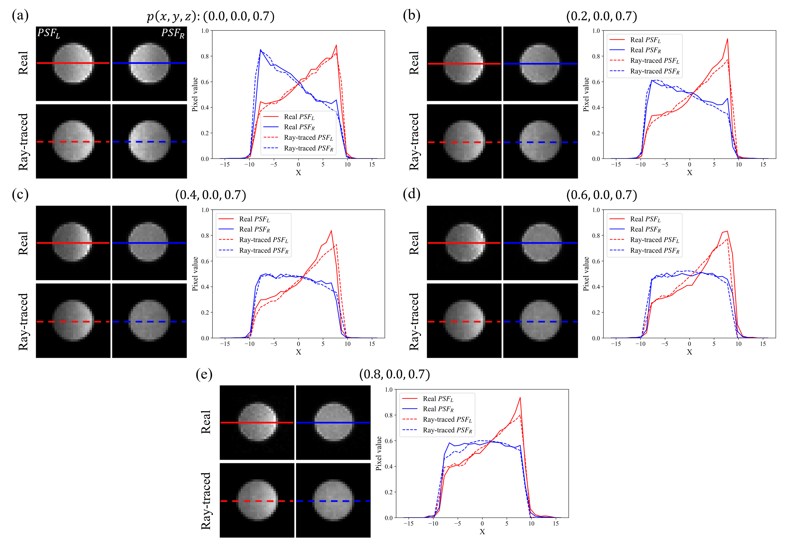
We select 5 points within the valid imaging region, and only their x-coordinates increase sequentially, corresponding to (a)–(e).
We provide not only the comparison results of real and our ray-traced DP PSFs for these 5 points,
but also present the pixel distribution curves for the central row.
As the object point p moves farther away from the optical axis, the real PSFL and PSFR become more phase asymmetric. Our simulated DP PSFs, obtained through ray tracing, align well with the real DP PSFs.
As the object point p moves farther away from the optical axis, the real PSFL and PSFR become more phase asymmetric. Our simulated DP PSFs, obtained through ray tracing, align well with the real DP PSFs.
Qualitative results of simulated DP images.
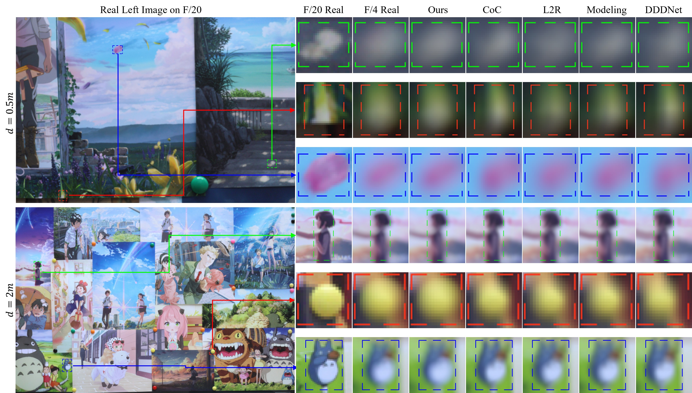
We evaluate the similarity between simulated and real F/4 defocused left DP images at two depths (0.5 m and 2 m).
Compared to real F/4 defocused images, images simulated by other methods exhibit varying pattern sizes, incomplete shapes, and texture shifts in different directions before and after the focus distance (1 m). Our method produces the most realistic simulated images.
Compared to real F/4 defocused images, images simulated by other methods exhibit varying pattern sizes, incomplete shapes, and texture shifts in different directions before and after the focus distance (1 m). Our method produces the most realistic simulated images.
We provide comparison videos of real vs. simulated F/4 defocused left DP images at 0.5 m.
Other methods' simulated images exhibit significant domain gaps that are visually apparent, whereas our method produces the most realistic simulations.
Other methods' simulated images exhibit significant domain gaps that are visually apparent, whereas our method produces the most realistic simulations.
Qualitative & quantitative results of absolute depth estimation.
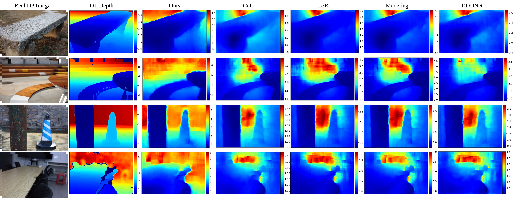
We evaluate DfDP models with CoC, L2R, Modeling, DDDNet, and our Sdirt on four casual scenes.
Each result image includes a color bar indicating depth in meters.
Their depth estimation results show partial accuracy in relative positional relationships but suffer from large absolute positional errors.
Our depth estimation results demonstrate high accuracy in both relative and absolute positions, with minimal errors.
(Best viewed in color and enlarged on screen.)
Their depth estimation results show partial accuracy in relative positional relationships but suffer from large absolute positional errors.
Our depth estimation results demonstrate high accuracy in both relative and absolute positions, with minimal errors.
(Best viewed in color and enlarged on screen.)
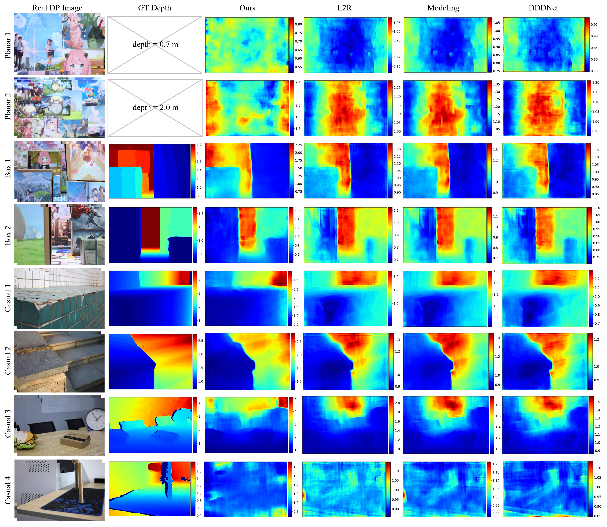
Evaluate DfDP models with L2R, Modeling, DDDNet, and our Sdirt on various DP119 dataset scenes.
Each result image is decorated with a color bar indicating depth in meters.
Their depth estimation results show partial accuracy in relative positional relationships but large absolute positional errors.
Our depth estimation results, however, demonstrate accuracy in both relative and absolute positions with minimal errors.
Furthermore, textureless areas lead to degradation in all models. (Best viewed in color and enlarged on screen.)
Their depth estimation results show partial accuracy in relative positional relationships but large absolute positional errors.
Our depth estimation results, however, demonstrate accuracy in both relative and absolute positions with minimal errors.
Furthermore, textureless areas lead to degradation in all models. (Best viewed in color and enlarged on screen.)
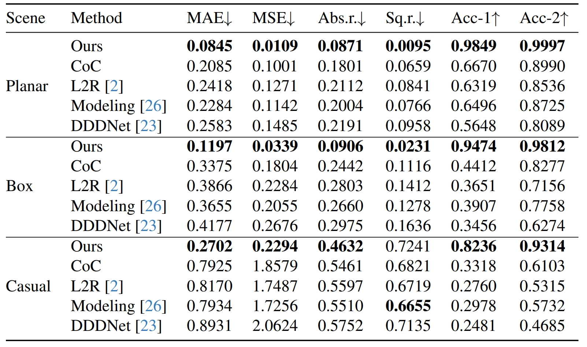
We evaluate all models on DP119 using the following metrics to assess depth estimation performance:
mean absolute error (MAE), mean squared error (MSE), absolute relative error (Abs.r.), squared relative error (Sq.r.), accuracy with δ < 1.25 (Acc-1), and δ < 1.25² (Acc-2).
The DfDP model trained with our Sdirt achieves superior performance across most scenarios and evaluation metrics.
mean absolute error (MAE), mean squared error (MSE), absolute relative error (Abs.r.), squared relative error (Sq.r.), accuracy with δ < 1.25 (Acc-1), and δ < 1.25² (Acc-2).
The DfDP model trained with our Sdirt achieves superior performance across most scenarios and evaluation metrics.
Exploratory Ideas (Unverified and Not in Paper).
The following are potential directions we are currently exploring.
These ideas have not been experimentally validated or included in the ICCV 2025 paper.
They are presented here solely to illustrate future possibilities.
These ideas have not been experimentally validated or included in the ICCV 2025 paper.
They are presented here solely to illustrate future possibilities.
Possible quad-pixel (QP) structure layout
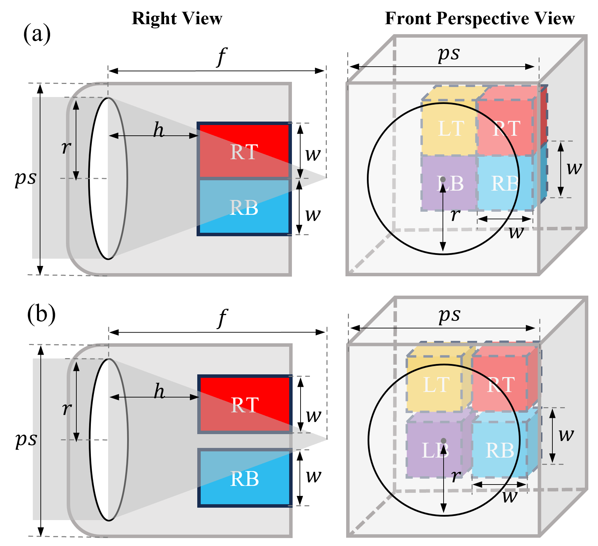
(a) Tightly Packed Quad-Pixel Layout with four sub-pixels: Left-Top (LT), Left-Bottom (LB), Right-Top (RT), and Right-Bottom (RB).
(b) Symmetrically Gapped Quad-Pixel Layout where the four sub-pixels (LT, LB, RT, RB) are arranged with equal spacing between them.
(b) Symmetrically Gapped Quad-Pixel Layout where the four sub-pixels (LT, LB, RT, RB) are arranged with equal spacing between them.
Ray-traced QP PSFs
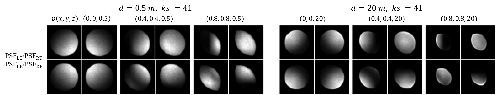Ray-traced QP unit images
(a) Raw image
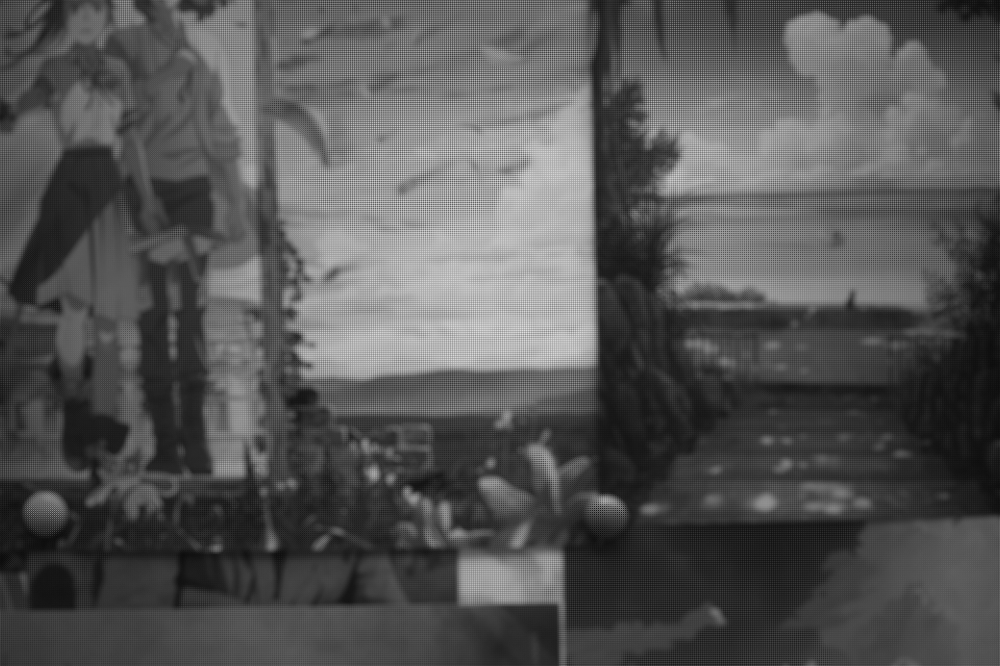
(b) Bayer pattern image
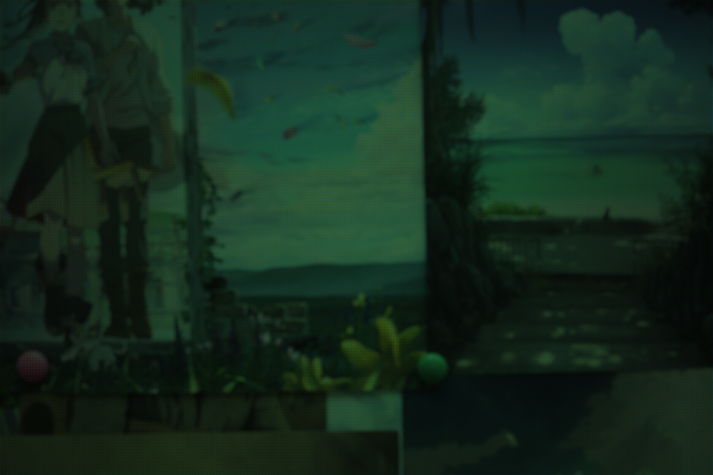
(c) Demosaic image
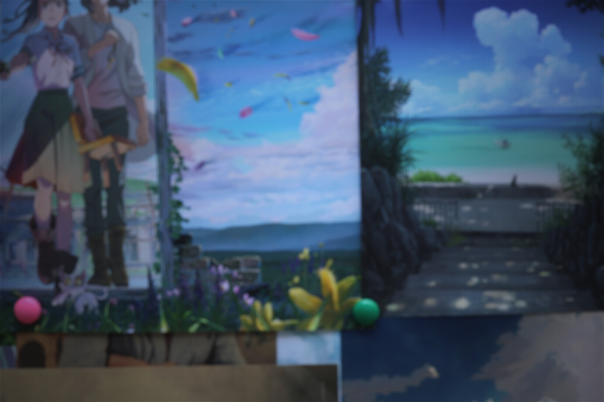
Ray-traced QP sub-images with vignetting
(a) LT image
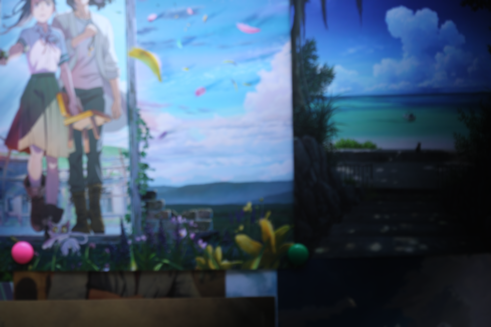
(b) LB image
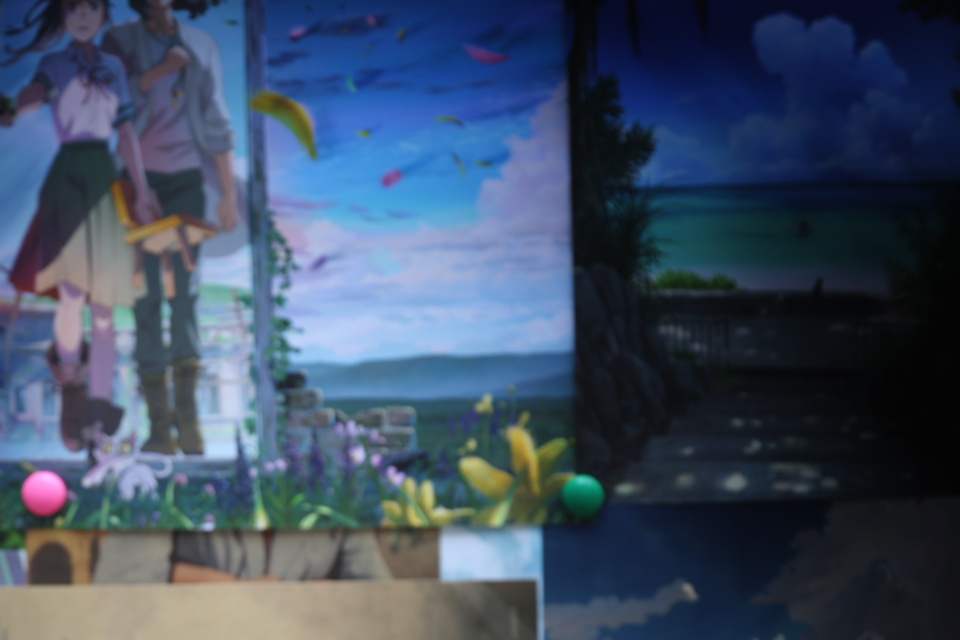
(c) RT image
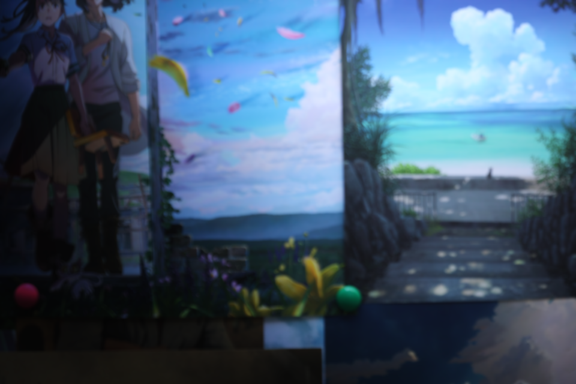
(d) RB image
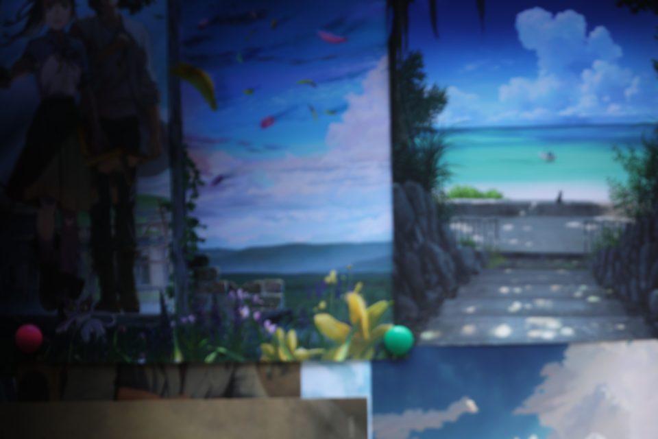
(d) LT v.s. LB

(e) LB v.s. RB

A personal discussion
I believe optical simulation itself is not the hard part — the real obstacle lies in the lack of openness from camera, smartphone, lens, and sensor manufacturers regarding optical element specifications and ISP pipelines.
If you are an industry insider with access to such parameters, and you need simulations to generate large-scale synthetic data or to verify component feasibility in advance — or if there is any way I can assist you — please feel free to contact me.
I also urgently need your support by providing real optical system data to help me build accurate simulators.
Thank you in advance,
LinYark
If you are an industry insider with access to such parameters, and you need simulations to generate large-scale synthetic data or to verify component feasibility in advance — or if there is any way I can assist you — please feel free to contact me.
I also urgently need your support by providing real optical system data to help me build accurate simulators.
Thank you in advance,
LinYark
BibTeX
@article{he2025simulating,
title={Simulating Dual-Pixel Images From Ray Tracing For Depth Estimation},
author={He, Fengchen and Zhao, Dayang and Xu, Hao and Quan, Tingwei and Zeng, Shaoqun},
journal={arXiv preprint arXiv:2503.11213},
year={2025}
}